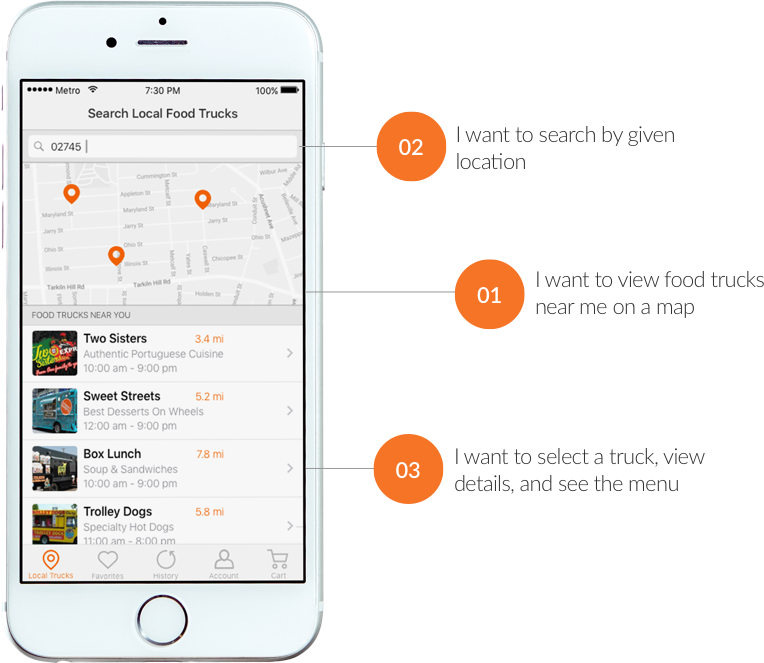
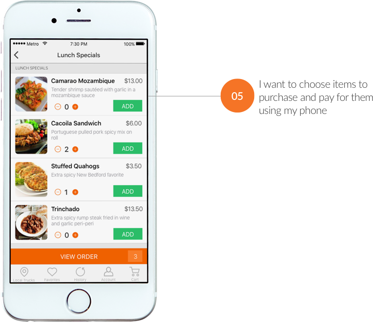
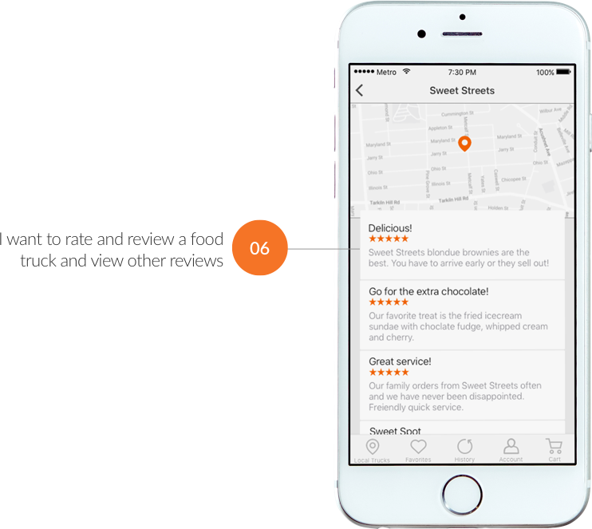
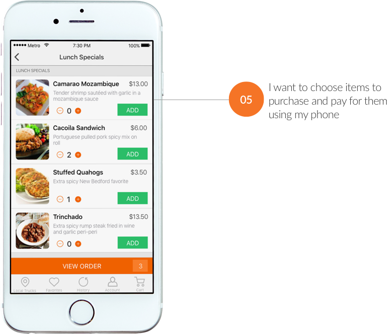
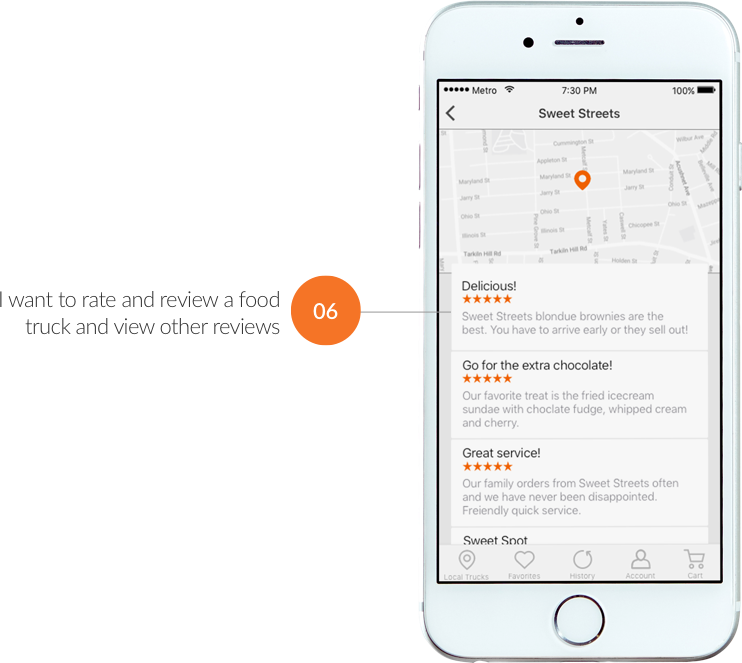
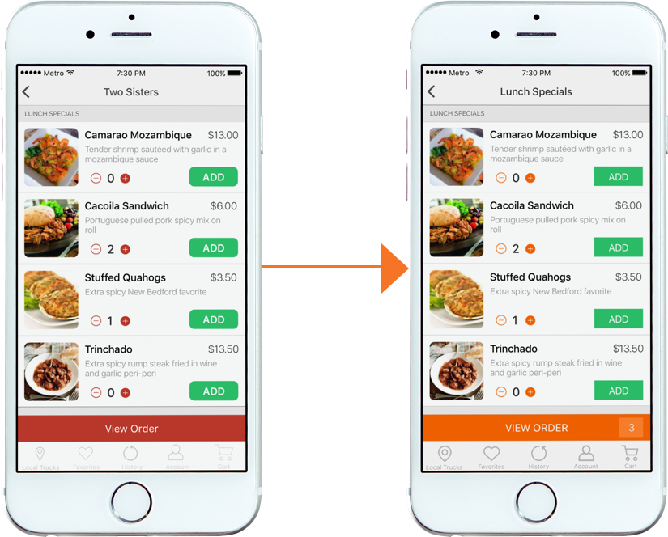
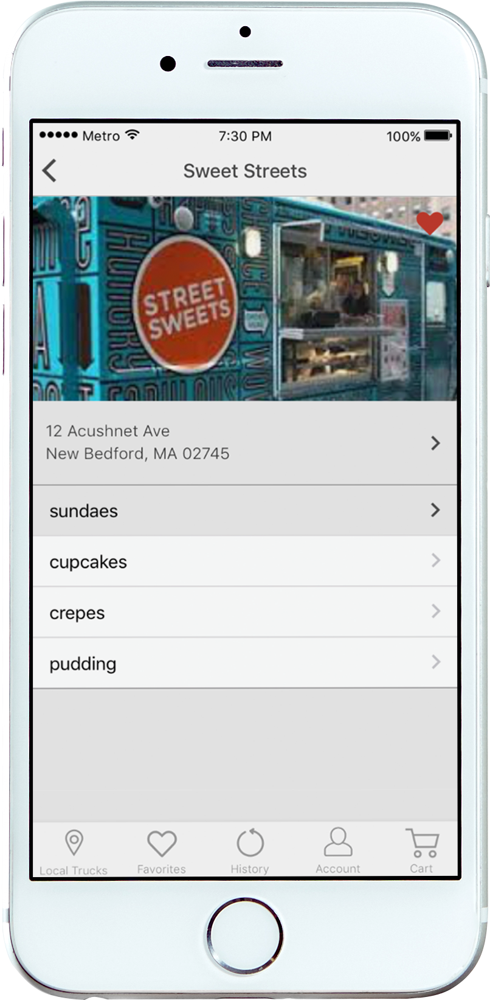
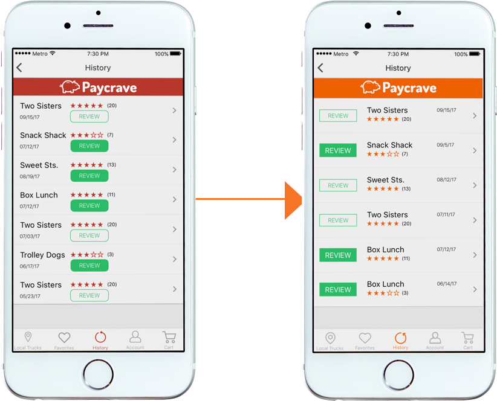

User Testing
To ensure Paycrave users have a seamless experience I ran tests on users flows for common tasks such as placing an order, reading reviews, and each task defined in the user stories.
 



In person user testing revealed that users were confused when trying to add a menu item to their cart. After selecting “ADD” they continued to select “ADD” expecting to see a confirmation that their item had been added. To solve this problem, I added an item total within the “VIEW ORDER” button.
Testing also revealed that the design required users to take too many steps when trying to view the reviews. To solve this problem, I added the reviews for each food truck to the top of each menu. This allowed users to access reviews in one click.
During the design phase attention was given to ensure minimum target touch points, and margins aligned with ios guidelines. I also updated the button styles to be consisten throughout the app.
